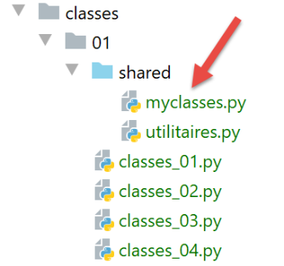

12. 类与对象
类是制造对象的模具。对象被称为类的实例。

注：文件 [shared] 已放置在项目目录 [Sources Root] 中。
12.1. 脚本 [classes_01]：一个 Objet 类
脚本 [classes_01] 展示了过时的类用法：
# 一个类
class Objet(object):
"""une classe Objet vide"""
# 所有类型为 [Objet] 的变量在构造时均可具有属性
obj1 = Objet()
obj1.attr1 = "un"
obj1.attr2 = 100
# 显示对象
print(f"objet1=[{obj1}, {type(obj1)},{id(obj1)},{obj1.attr1},{obj1.attr2}]")
# 修改对象
obj1.attr2 += 100
# 显示对象
print(f"objet1=[{obj1.attr1},{obj1.attr2}]")
# 将引用 obj1 赋值给 obj2
obj2 = obj1
# 修改由 obj2 指向的对象
obj2.attr2 = 0
# 显示两个对象——obj1 现在指向一个已修改的对象
print(f"objet1=[{obj1.attr1},{obj1.attr2}]")
print(f"objet2=[{obj2.attr1},{obj2.attr2}]")
# obj1 和 obj2 指向同一个对象
print(f"objet1=[{obj1}, {id(obj1)},{obj1.attr1},{obj1.attr2}]")
print(f"objet2=[{obj2}, {id(obj2)},{obj2.attr1},{obj2.attr2}]")
print(obj1 == obj2)
# obj1 实例的类型
print(f"type(obj1)={type(obj1)}")
print(f"isinstance(obj1,Objet)={isinstance(obj1, Objet)}, isinstance(obj1,object)={isinstance(obj1, object)}")
# 在 Python 中，所有类型都是对象
print(f"type(4)={type(4)}")
print(f"isinstance(4, int)={isinstance(4, int)}, isinstance(4, object)={isinstance(4, object)}")
注：
- 第2-3行：一个空的类[Objet]；
- 第2行：类可以以三种形式声明：
- class 对象；
- class 对象()；
- class 对象(object)；
- 第3行：另一种注释形式。以三个“*”开头的注释可以跨多行；
- 第7行：实例化类Objet。结果是一个地址，如第24-26行所示；
- 第8-9行：直接初始化对象的两个属性；
- 第17行：引用复制。变量obj1和obj2是指向同一对象的两个指针（引用）；
- 第19行：修改由[obj2]指向的对象。 由于 [obj1] 和 [obj2] 指向同一个对象，第 21 行和第 22 行中对 [obj1, obj2] 对象的显示将表明 [obj1] 所指向的对象已发生变化；
- 第24-26行：这些行旨在展示变量[obj1]与[obj2]的相等性。 第26行的输出将验证这一点。在此比较中，[obj1]和[obj2]这两个地址是相等的；
- 每个 Python 对象都由一个唯一编号标识，该编号可通过表达式 [id(objet)] 获得。 第24行和第25行将显示，[obj1]和[obj2]所指向的对象编号是相同的，从而表明这两个引用指向同一个对象；
- 第27-29行：如果表达式[expr]的类型为[Type]，则函数[isinstance(expr,Type)]返回布尔值True。 在此，我们将看到 [obj1] 既是类型 [Objet]（这似乎很自然），也是类型 [object]。 类 [object] 是所有 Python 类的父类。根据类继承的特性，子类 F 拥有其父类 P 的所有属性，且函数 [isinstance(instance de F, P)] 返回 True；
- 第30-32行：表明类型[int]本身也是类型[object]。所有Python类型都继承自类[object]；
结果
C:\Data\st-2020\dev\python\cours-2020\python3-flask-2020\venv\Scripts\python.exe C:/Data/st-2020/dev/python/cours-2020/python3-flask-2020/classes/01/classes_01.py
objet1=[<__main__.Objet object at 0x0000025C3F469BB0>, <class '__main__.Objet'>,2595221838768,un,100]
objet1=[un,200]
objet1=[un,0]
objet2=[un,0]
objet1=[<__main__.Objet object at 0x0000025C3F469BB0>, 2595221838768,un,0]
objet2=[<__main__.Objet object at 0x0000025C3F469BB0>, 2595221838768,un,0]
True
type(obj1)=<class '__main__.Objet'>
isinstance(obj1,Objet)=True, isinstance(obj1,object)=True
type(4)=<class 'int'>
isinstance(4, int)=True, isinstance(4, object)=True
Process finished with exit code 0
12.2. 脚本 [classes_02]：一个 Personne 类
脚本 [classes_02] 展示了类属性的公开性：它们可直接从类外部访问。这又是一个不建议使用的类用法。尽管如此，我们仍提供此示例，因为有时会遇到此类代码（Python 允许这种写法），因此必须能够理解它。
# Personne 类
class Personne:
# 类的属性
# 未声明 - 可以动态创建
# 方法
def identité(self: object) -> str:
# 表面上看，使用了不存在的属性
return f"[{self.prénom},{self.nom},{self.âge}]"
# ---------------------------------- main
# 属性为 public 且可动态创建
# 类实例化
p = Personne()
# 直接初始化类属性
p.prénom = "Paul"
p.nom = "de la Hûche"
p.âge = 48
# 调用类的方法
print(f"personne={p.identité()}")
# 实例 p 的类型
print(f"type(p)={type(p)}")
print(f"isinstance(Personne)={isinstance(p, Personne)}, isinstance(object)={isinstance(p, object)}")
注：
- 第 2-9 行：包含一个方法的类；
- 第 7 行：类的所有方法的首个参数必须是 self 对象，该对象表示当前对象。方法 [identité] 返回一个字符串；
- 第15行：实例化一个[Personne]对象；
- 第 16-19 行：表明对象的属性可以动态创建（它们在类定义中并不存在）；
- 第 9 行：类属性采用 [self.attribut] 这种表示法；
- 第23-24行将表明，对象[p]既是类[Personne]的实例，也是类[object]的实例；
结果
C:\Data\st-2020\dev\python\cours-2020\python3-flask-2020\venv\Scripts\python.exe C:/Data/st-2020/dev/python/cours-2020/python3-flask-2020/classes/01/classes_02.py
personne=[Paul,de la Hûche,48]
type(p)=<class '__main__.Personne'>
isinstance(Personne)=True, isinstance(object)=True
Process finished with exit code 0
12.3. 脚本 [classes_03]：带构造函数的 Personne 类
脚本 [classes_03] 展示了类的一般用法：
# Personne 类
class Personne:
# 构造函数——初始化三个属性
def __init__(self: object, prénom: str, nom: str, âge: int):
# 名字：该人的名字
# 姓氏：该人的姓氏
# 年龄：该人的年龄
self.prénom = prénom
self.nom = nom
self.âge = âge
# 将类的属性转换为字符串
def identité(self: object) -> str:
return f"[{self.prénom},{self.nom},{self.âge}]"
# ---------------------------------- main
# 一个 Personne 对象
p = Personne("Paul", "de la Hûche", 48)
# 调用方法
print(f"personne={p.identité()}")
注：
- 第 4 行：类的构造函数名为 __init__。与其他方法一样，其第一个参数是 self；
- 第 20 行：使用类的构造函数创建了一个 Personne 对象；
- 第13-15行：方法[identité]返回一个字符串，该字符串表示对象的内容；
- 第 22 行：显示该人的身份；
结果
C:\Data\st-2020\dev\python\cours-2020\python3-flask-2020\venv\Scripts\python.exe C:/Data/st-2020/dev/python/cours-2020/python3-flask-2020/classes/01/classes_03.py
personne=[Paul,de la Hûche,48]
Process finished with exit code 0
12.4. 脚本 [classes_04]：静态方法
我们在文件夹 [modules] 中定义了以下类 [Utils]（utils.py）：

class Utils:
# 静态方法
@staticmethod
def is_string_ok(string: str) -> bool:
# string 是否为字符串
erreur = not isinstance(string, str)
if not erreur:
# 字符串是否为空？
erreur = string.strip() == ''
# 结果
return not erreur
注释
- 第 3 行：注解 [@staticmethod] 表明被注解的方法是类方法，而非实例方法。这体现在该方法的第一个参数并非关键字 [self]。 因此，静态方法无法访问对象的属性。与其编写：
应改写为
由于上文写的是 [Utils.is_string_ok]，因此方法 [is_string_ok] 被称为类方法（此处指 Utils 类）。 为此，方法 [Utils.is_string_ok] 必须使用关键字 [@staticmethod] 进行注解。
静态方法 [Utils.is_string_ok] 用于验证数据是否为非空字符串。
脚本 [classes_04] 以如下方式使用类 [Utils]：
# 配置应用程序
import config
config = config.configure()
# 已配置 syspath - 可以进行导入
from utilitaires import Utils
print(Utils.is_string_ok(" "))
print(Utils.is_string_ok(47))
print(Utils.is_string_ok(" q "))
- 第 1-4 行：使用配置脚本；
配置脚本 [config.py] 如下：
def configure():
import os
# 配置文件所在的文件夹
script_dir = os.path.dirname(os.path.abspath(__file__))
# 需添加到 syspath 中的文件夹绝对路径
absolute_dependencies = [
f"{script_dir}/shared",
"C:/Data/st-2020/dev/python/cours-2020/python3-flask-2020/venv/lib/site-packages",
"C:/myprograms/Python38/lib",
"C:/myprograms/Python38/DLLs"
]
# 更新系统路径
from myutils import set_syspath
set_syspath(absolute_dependencies)
# 返回配置
return {}
- 第 9 行：将文件夹 [shared] 添加到 Python 路径中；
执行结果如下：
12.5. 脚本 [classes_05]：属性有效性检查
脚本 [classes_05] 引入了新概念：
- 定义专有异常类型；
- 定义方法 [_str_]，该方法是类的默认身份方法；
- 定义属性；
# 配置应用程序
import config
config = config.configure()
# syspath 已配置 - 可以进行导入
from utilitaires import Utils
# 一个从 [BaseException] 派生的专有异常类
class MyException(BaseException):
# 不执行任何操作：空类
pass
# Personne 类
class Personne:
# 构造函数
def __init__(self: object, prénom: str = "x", nom: str = "y", âge: int = 0):
# 名字：该人的名字
# 姓氏：该人的姓氏
# 年龄：该人的年龄
# 参数存储
# 初始化将通过 setter 方法进行
self.prénom = prénom
self.nom = nom
self.âge = âge
# 类的 toString 方法
def __str__(self: object) -> str:
return f"[{self.__prénom},{self.__nom},{self.__âge}]"
# 获取器
@property
def prénom(self) -> str:
return self.__prénom
@property
def nom(self) -> str:
return self.__nom
@property
def âge(self) -> int:
return self.__âge
# 设置器
@prénom.setter
def prénom(self, prénom: str):
# 名字字段不能为空
if Utils.is_string_ok(prénom):
self.__prénom = prénom.strip()
else:
raise MyException("Le prénom doit être une chaîne de caractères non vide")
@nom.setter
def nom(self, nom: str):
# 名字不能为空
if Utils.is_string_ok(nom):
self.__nom = nom.strip()
else:
raise MyException("Le nom doit être une chaîne de caractères non vide")
@âge.setter
def âge(self, âge: int):
# 年龄必须是 >=0 的整数
erreur = False
if isinstance(âge, int):
if âge >= 0:
self.__âge = âge
else:
erreur = True
else:
erreur = True
# 错误？
if erreur:
raise MyException("L'âge doit être un entier >=0")
# ---------------------------------- main
# 一个 Personne 对象
try:
# 实例化 Personne 类
p = Personne("Paul", "de la Hûche", 48)
# 显示对象 p
print(f"personne={p}")
except MyException as erreur:
# 显示错误
print(erreur)
# 另一个 Personne 对象
try:
# Personne 类的实例化
p = Personne("xx", "yy", "zz")
# 显示对象 p
print(f"personne={p}")
except MyException as erreur:
# 显示错误
print(erreur)
# 另一个 Person 对象，这次不带参数
try:
# Personne 类的实例化
p = Personne()
# 显示对象 p
print(f"personne={p}")
except MyException as erreur:
# 显示错误信息
print(erreur)
# 无法访问类中的私有属性 __attr
p.__prénom = "Gaëlle"
print(f"p.prénom={p.prénom}")
print(f"p.__prénom={p.__prénom}")
p.prénom = "Sébastien"
print(f"p.prénom={p.prénom}")
print(f"p.__prénom={p.__prénom}")
注：
- 第 10-13 行：一个从类 BaseException 派生的类 MyException（我们稍后会详细讨论这一点）。它并未为后者添加任何功能，其存在仅是为了拥有一个专有异常；
- 第 19 行：构造函数的参数具有默认值。因此，操作 p=Personne() 与 p=Personne("x","y",0) 等效；
- 第34-45行：类的属性。这些是使用关键字[@property]注解的方法。它们用于返回属性的值；
- 第47-77行：类的设置器。这些方法带有[@attributsetter]关键字注解，用于设置属性的值；
- 第 48-54 行：属性 [prénom] 的设置器。每当为属性 [prénom] 赋值时，都会调用此方法：
第 2 行将触发对 [p.prénom(valeur)] 的调用。通过设置器为属性赋值的好处在于，由于设置器本身是一个函数，因此可以验证赋予该属性的值的有效性；
- 第 51 行：验证赋给属性 [prénom] 的值是否为非空字符串。为此，我们使用了之前提到的静态方法 [Utils.isStringOk]；
- 第 52 行：将 [prénom] 属性的值去掉字符串首尾的“空格”，并将其赋值给 [self.__prénom] 属性。 因此这里使用的并非 [prénom] 属性。若非如此，将会导致无限递归调用。 其实可以使用任何属性名。但使用以两个下划线开头的 [__prénom] 属性具有特殊含义：以两个下划线开头的属性属于该类的私有属性。这意味着它们在类外部不可见。因此不能这样写：
实际上，我们很快会看到虽然可以这样写，但并不会修改名字。它会执行其他操作；
- 第53-54行：如果分配给名字的值不正确，将抛出异常。这样调用方就会知道其调用是错误的；
- 第 35-37 行：属性 [prénom]。每当在表达式中写入 [p.prénom] 时，该属性都会被调用。此时将调用方法 [p.prénom()]。 第 37 行，我们返回属性 [__prénom] 的值，因为我们已经看到属性 [prénom] 的设置器将其值赋给了私有属性 [__prénom]；
- 第56-62行：[nom]属性的设置器与[prénom]属性的设置器构建方式类似。 第64-77行中属性[âge]的设置器也是如此；
- 尽管 [prénom, nom, valeur] 并非真正的属性（实际属性为 [__prénom, __nom, __âge]），但我们将继续将其称为类的属性，因为它们被作为属性使用；
- 第19-28行：类构造函数隐式使用了属性[prénom, nom, âge]的设置器。 实际上，在第26行编写[self.prénom = prénom]时，默认会调用方法[prénom(self, prénom)]。 随后将验证参数 [prénom] 的有效性。另外两个属性 [nom, âge] 也将遵循同样的处理方式；
- 采用此模式，无法为该类的 [prénom, nom, âge] 属性赋予错误值；
- 第30-32行：函数__str__取代了之前名为identité的方法。 名称 [__str__]（前后各两个下划线）并非偶然。我们稍后将看到这一点；
- 第83-86行：实例化一个人，然后显示其身份；
- 第 84 行：实例化；
- 第86行：显示。该操作要求将对象p以字符串形式显示出来。 此时，Python 解释器会自动调用 p.__str__() 方法（如果该方法存在）。该方法的作用与 Java 或 .NET 语言中的 toString() 方法相同；
- 第 87-89 行：处理可能出现的 MyException 类型异常。随后显示错误信息；
- 第 91-99 行：针对使用错误参数实例化的第二个对象，处理方式相同；
- 第102-109行：第三个使用默认参数实例化的人员情况同上：未传递任何参数。此时使用的是构造函数中这些参数的默认值；
- 第112-117行：我们已声明属性[__prénom]为私有，因此通常无法从类外部访问。现在需要验证这一点；
- 第112-114行：为属性[__prénom]赋值，然后验证属性[__prénom]和[prénom]的值，这两者通常应保持一致；
- 第 115-117 行：重新执行该操作，此次初始化 [prénom] 属性；
结果
C:\Data\st-2020\dev\python\cours-2020\python3-flask-2020\venv\Scripts\python.exe C:/Data/st-2020/dev/python/cours-2020/python3-flask-2020/classes/01/classes_05.py
personne=[Paul,de la Hûche,48]
L'âge doit être un entier >=0
personne=[x,y,0]
p.prénom=x
p.__prénom=Gaëlle
p.prénom=Sébastien
p.__prénom=Gaëlle
Process finished with exit code 0
注释
- 第 5-6 行：可以看到，[p.__prénom = "Gaëlle"] 的赋值并未改变第 5 行中 [prénom] 属性的值；
- 第7-8行：可以看到赋值操作[p.prénom = "Sébastien"]并未改变属性[__prénom]的值，第8行；
由此可推断出什么？很可能操作 [p.__prénom = "Gaëlle"] 为该类创建了一个公共属性 [__prénom]，但该属性与类内部操作的私有属性 [__prénom] 不同；
12.6. 脚本 [classes_06]：添加对象初始化方法
脚本 [classes_06] 为类 [Personne] 添加了一个方法：
# 正在配置应用程序
import config
config = config.configure()
# 已配置 syspath - 可以进行导入
from utilitaires import Utils
# 一个从 [BaseException] 派生的专有异常类
class MyException(BaseException):
# 不执行任何操作：空类
pass
# Personne 类
class Personne:
# 构造函数
def __init__(self: object, prénom: str = "x", nom: str = "y", âge: int = 0):
# 名字：该人的名字
# 姓氏：该人的姓氏
# 年龄：该人的年龄
# 参数存储
# 初始化将通过设置器进行
self.prénom = prénom
self.nom = nom
self.âge = âge
# 其他初始化方法
def init_with_personne(self: object, p: object):
# 使用人员 p 初始化当前对象
self.__init__(p.prénom, p.nom, p.âge)
# 类的 toString 方法
def __str__(self: object) -> str:
return f"[{self.__prénom},{self.__nom},{self.__âge}]"
# 获取器
…
# 设置器
…
# ---------------------------------- main
# 一个 Personne 对象
try:
# 实例化 Personne 类
p = Personne("Paul", "de la Hûche", 48)
# 显示 p 对象
print(f"personne={p}")
except MyException as erreur:
# 显示错误消息
print(erreur)
# 另一个 Personne 对象
try:
# 实例化 Personne 类
p = Personne("xx", "yy", "zz")
# 显示对象 p
print(f"p={p}")
except MyException as erreur:
# 显示错误信息
print(erreur)
# 另一个 Person 对象，这次不带参数
try:
# 实例化 Personne 类
p = Personne()
# 显示对象 p
print(f"p={p}")
except MyException as erreur:
# 显示错误信息
print(erreur)
# 通过复制获得的另一个 Personne 对象
try:
# 实例化 Personne 类
p2 = Personne()
p2.init_with_personne(p)
# 显示对象 p2
print(f"p2={p2}")
except MyException as erreur:
# 显示错误信息
print(erreur)
注：
- 与前一个脚本的区别在于第 30-33 行。我们添加了方法 initWithPersonne。该方法调用了构造函数 __init__。 与类型化语言不同，本语言无法通过参数或返回值的性质来区分同名方法。因此，无法通过不同的参数（此处为 Personne 类型的对象）来创建多个构造函数；
结果
C:\Data\st-2020\dev\python\cours-2020\python3-flask-2020\venv\Scripts\python.exe C:/Data/st-2020/dev/python/cours-2020/python3-flask-2020/classes/01/classes_06.py
personne=[Paul,de la Hûche,48]
L'âge doit être un entier >=0
p=[x,y,0]
p2=[x,y,0]
Process finished with exit code 0
12.7. 脚本 [classes_07]：Personne 对象列表
现在我们将类 [MyException] 和 [Personne] 放入一个模块中，以便在无需复制其代码的情况下使用它们：

这两个类将位于上方的 [myclasses.py] 模块中。
脚本 [classes_07] 展示了如何生成对象列表：
# 正在配置应用程序
import config
config = config.configure()
# 已配置 syspath - 可以进行导入
from myclasses import Personne
# ---------------------------------- 主程序
# 创建人员对象列表
groupe = [Personne("Paul", "Langevin", 48), Personne("Sylvie", "Lefur", 70)]
# 这些人员的身份
for i in range(len(groupe)):
print(f"groupe[{i}]={groupe[i]}")
注：
- 第 7 行：导入类 [Personne]；
- 第 11 行：一个 [Personne] 类型的对象列表；
- 第 13-14 行：遍历该列表以显示其中的每个元素；
- 第14行：函数[print]将显示表示对象[groupe[i]]的字符串。默认情况下，将调用该对象的[__str__]方法；
结果
C:\Users\serge\.virtualenvs\cours-python-v02\Scripts\python.exe C:/Data/st-2020/dev/python/cours-2020/v-02/classes/01/classes_07.py
groupe[0]=[Paul,Langevin,48]
groupe[1]=[Sylvie,Lefur,70]
Process finished with exit code 0
12.8. 脚本 [classes_08]：创建一个从 Personne 类派生的类
我们在模块 [myclasses] 中定义了以下类 [Enseignant]：
# 教师类
class Enseignant(Personne):
# 构造函数
def __init__(self, prénom: str = "x", nom: str = "x", âge: int = 0, discipline: str = "x"):
# 名字：该人的名字
# 姓氏：该人的姓氏
# 年龄：该人的年龄
# 学科：所教授的学科
# 家长姓名首字母
Personne.__init__(self, prénom, nom, âge)
# 其他缩写
self.discipline = discipline
# toString
def __str__(self) -> str:
return f"enseignant[{super().__str__()},{self.discipline}]"
# 属性
@property
def discipline(self) -> str:
return self.__discipline
@discipline.setter
def discipline(self, discipline: str):
# 学科必须为非空字符串
if Utils.is_string_ok(discipline):
self.__discipline = discipline
else:
raise MyException("La discipline doit être une chaîne de caractères non vide")
- 第 2 行：声明类 Enseignant 为类 Personne 的派生类。派生类不仅拥有父类的所有属性（包括属性与方法），还拥有其特有的属性；
- 第13行：类[Enseignant]定义了一个新属性[discipline]；
- 第 11 行：派生类 Enseignant 的构造函数必须调用父类 Personne 的构造函数，并向其传递所需的参数；
- 第 17 行：函数 [super()] 返回父类。此处调用了父类的函数 [__str__]；
- 第19-30行：定义新属性[discipline]的getter和setter；
脚本 [classes_08] 以如下方式使用类 [Enseignant]：
# 配置应用程序
import config
config = config.configure()
# syspath 已配置 - 可以进行导入
from myclasses import Personne, Enseignant
# ---------------------------------- main
# 创建 Personne 对象及其派生类的数组
groupe = [Enseignant("Paul", "Langevin", 48, "anglais"), Personne("Sylvie", "Lefur", 70)]
# 这些人员的身份
for i in range(len(groupe)):
print(f"groupe[{i}]={groupe[i]}")
注：
- 第 7 行：导入在文件 [myclasses.py] 中定义的类 [Personne] 和 [Enseignant]；
- 第11-14行：定义一组人员，随后显示其身份信息；
结果
C:\Data\st-2020\dev\python\cours-2020\python3-flask-2020\venv\Scripts\python.exe C:/Data/st-2020/dev/python/cours-2020/python3-flask-2020/classes/01/classes_08.py
groupe[0]=enseignant[[Paul,Langevin,48],anglais]
groupe[1]=[Sylvie,Lefur,70]
Process finished with exit code 0
12.9. 脚本 [classes_09]：从 Personne 类派生的第二个子类
脚本 [classes_09] 引入了从类 [Personne] 派生的类 [Etudiant]。该类在模块 [myclasses] 中定义如下：
# 学生类
class Etudiant(Personne):
# 构造函数
def __init__(self: object, prénom: str = "x", nom: str = "y", âge: int = 0, formation: str = "x"):
Personne.__init__(self, prénom, nom, âge)
self.formation = formation
# toString
def __str__(self: object) -> str:
return f"étudiant[{super().__str__()},{self.formation}]"
# 属性
@property
def formation(self) -> str:
return self.__formation
@formation.setter
def formation(self, formation: str):
# 培训必须是一个非空字符串
if Utils.is_string_ok(formation):
self.__formation = formation
else:
raise MyException("La formation doit être une chaîne de caractères non vide")
脚本 [classes_09] 以如下方式使用类 [Etudiant]：
# 配置应用程序
import config
config = config.configure()
# syspath 已配置 - 可以进行导入
from myclasses import Personne, Enseignant, Etudiant
# ---------------------------------- main
# 创建 Personne 对象及其派生类的数组
groupe = [Enseignant("Paul", "Langevin", 48, "anglais"), Personne("Sylvie", "Lefur", 70),
Etudiant("Steve", "Boer", 22, "iup2 qualité")]
# 这些人员的身份
for personne in groupe:
# 显示人员信息
print(personne)
注：
- 此脚本与前一个类似。
结果
C:\Data\st-2020\dev\python\cours-2020\python3-flask-2020\venv\Scripts\python.exe C:/Data/st-2020/dev/python/cours-2020/python3-flask-2020/classes/01/classes_09.py
enseignant[[Paul,Langevin,48],anglais]
[Sylvie,Lefur,70]
étudiant[[Steve,Boer,22],iup2 qualité]
Process finished with exit code 0
12.10. 脚本 [classes_10]：属性 [__dict__]
脚本 [classes_10] 包含属性 [__dict__]，我们后续将经常使用该属性：
# 配置应用程序
import config
config = config.configure()
# 已配置 syspath - 可以进行导入
from myclasses import Etudiant
# ---------------------------------- main
# 创建学生
étudiant=Etudiant("Steve", "Boer", 22, "iup2 qualité")
# 属性字典
print(étudiant.__dict__)
注释
- 第 1-4 行：配置应用程序；
- 第 7 行：导入类 [Etudiant]；
- 第 11 行：实例化一名学生；
- 第13行：调用预定义方法[__dict__]（标识符前后各两个下划线）；
结果如下：
- 第2行，得到一个字典，其键是对象的属性，前缀为其所属类的名称。我们将使用该字典在对象与字典之间建立桥梁；